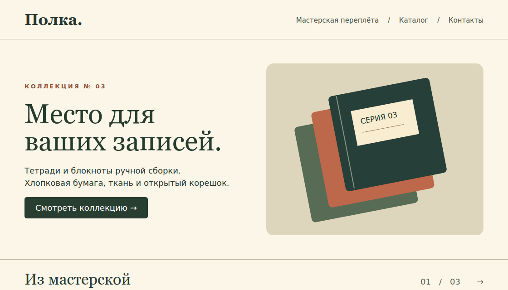

Правки по скриншоту
Заказчик просит подвинуть кнопку. Где именно он оставил правку и как передать её разработчику?
Скриншот для работы
Найдите на картинке «Смотреть коллекцию» и «Из мастерской». Это две контрольные точки для вашей версии инструмента.

Открыть исходный PNG · 1120 × 640 px

Материалы готовы. Теперь ваша очередь: выберите, как будет устроен интерфейс, и пройдите сценарии из README.